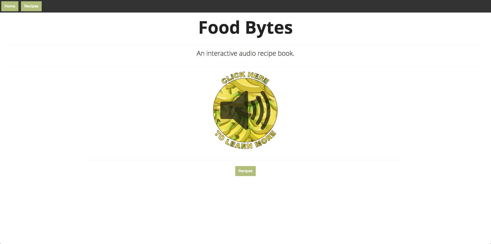

twitter
linkedin
github
Projects
Mood-Ring captures the mood on any given topic trending on Twitter. Right now it's getting the mood around Donald Trump. It scales from blue (very bad), through purple, to red (glowing).

FoodBytes was a group project I worked on at EDA. It reads recipes to the user and is prompted to play audio files through programmed commands. (It may take a while to load)